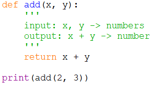
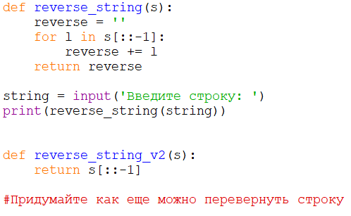
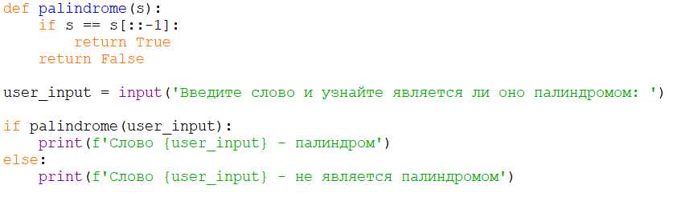
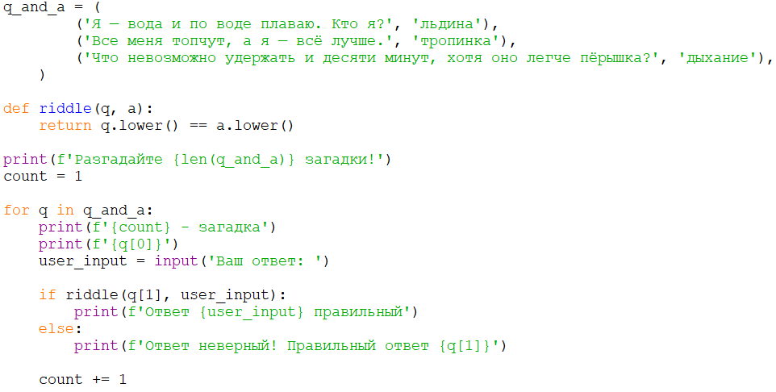

1
Функция сложения
легко
Создай функцию сложения двух чисел.
Показать ответ (сначала попробуй сам!)

Учимся упаковывать код в функции, чтобы использовать его много раз. В новых задачах функции проверяются автоматически.
Создай функцию сложения двух чисел.

Создай функцию для отображения введённой строки задом наперёд.

Напиши функцию, которая проверяет, является ли переданная строка палиндромом.

Создай программу, которая загадывает несколько загадок и в зависимости от ответа выдаёт результат. Проверку ответа вынеси в функцию.

Дальше — задачи с автопроверкой. Напиши функцию и нажми «✓ Проверить»: программа сама вызовет её с разными значениями. Вызывать input() здесь не нужно.
Напиши функцию is_even(n), которая возвращает True, если число чётное, и False — если нет.
def is_even(n):
return n % 2 == 0Напиши функцию max_of_three(a, b, c), которая возвращает наибольшее из трёх чисел. Встроенную max() не используй!
def max_of_three(a, b, c):
result = a
if b > result:
result = b
if c > result:
result = c
return resultНапиши функцию count_vowels(text), которая возвращает количество гласных букв в строке. Гласные: аеёиоуыэюя и aeiou. Большие буквы тоже считаются.
def count_vowels(text):
vowels = 'аеёиоуыэюяaeiou'
count = 0
for letter in text.lower():
if letter in vowels:
count += 1
return countНапиши функцию to_fahrenheit(c). Формула: F = C × 9 / 5 + 32.
def to_fahrenheit(c):
return c * 9 / 5 + 32Напиши функцию greet(name, lang='ru') с аргументом по умолчанию. Она возвращает строку:
greet('Аня') → 'Привет, Аня!'greet('Аня', 'en') → 'Hello, Аня!'greet('Аня', 'es') → 'Hola, Аня!''ru'def greet(name, lang='ru'):
if lang == 'en':
return f'Hello, {name}!'
if lang == 'es':
return f'Hola, {name}!'
return f'Привет, {name}!'